¿Cómo detectar una fuga de agua oculta en tu apartamento?
Conoce las 7 señales de alerta más comunes y la prueba del medidor de agua que puedes hacer tú mismo sin romper pisos.
Más de 10 años de experiencia atendiendo hogares y negocios en Medellín. Plomeros cerca de ti, servicio 24 horas todos los días.
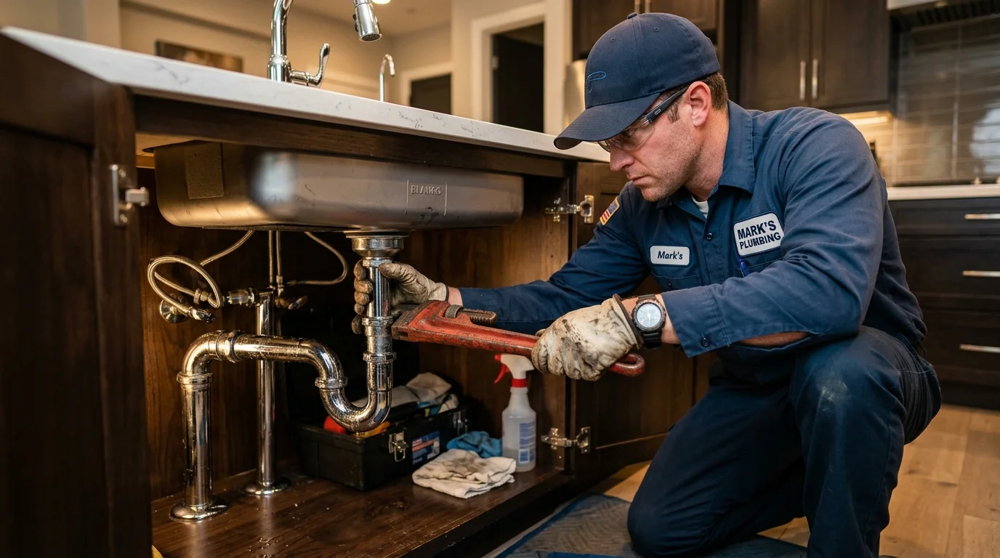
Atendemos todo tipo de problemas de plomería en hogares, locales comerciales y empresas con herramientas de última tecnología y garantía por escrito.
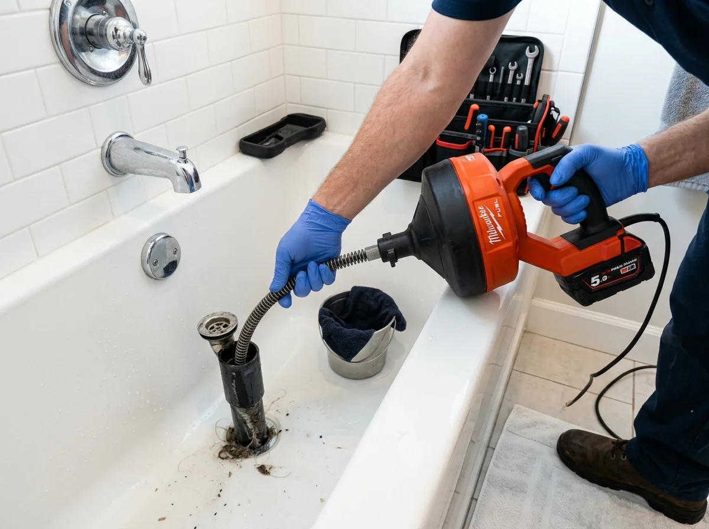
Solucionamos obstrucciones con sondas eléctricas de última tecnología sin necesidad de romper paredes o pisos.
Solicitar servicio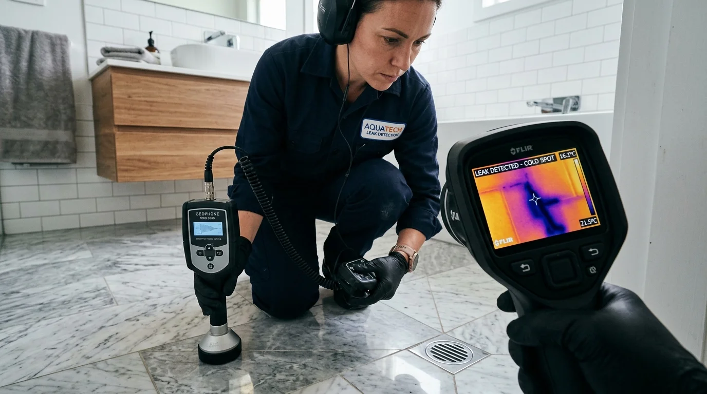
Localizamos fugas ocultas con tecnología de geófono digital y cámaras térmicas de alta precisión.
Solicitar servicio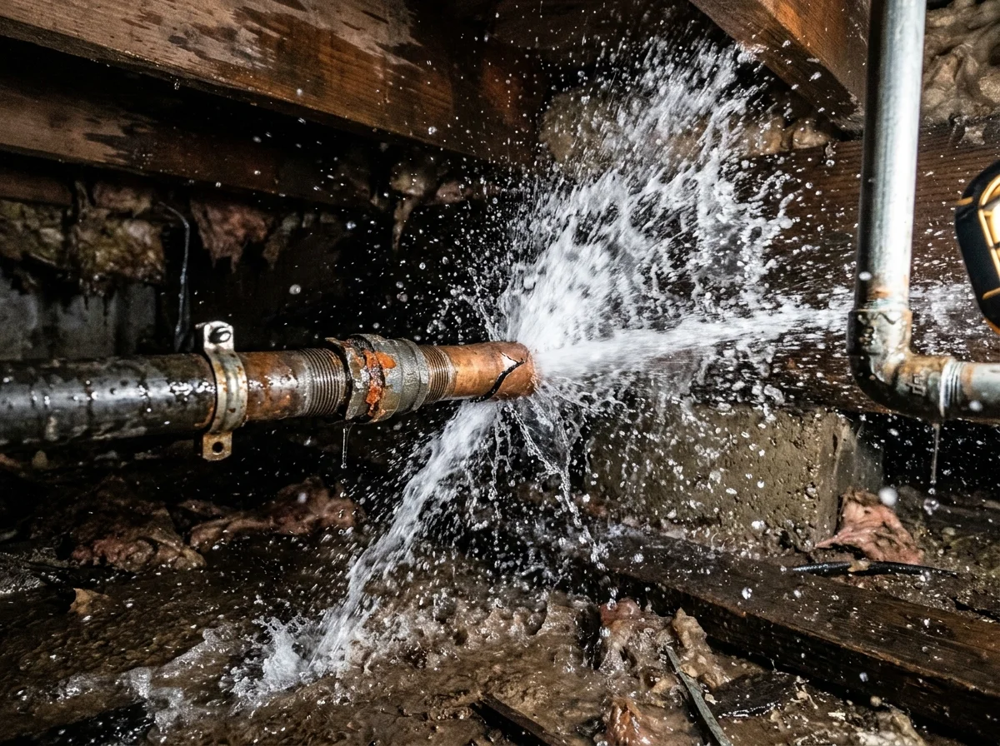
Detectamos y reparamos fugas de agua en tuberías hidráulicas visibles y bajo suelo con sello garantizado.
Solicitar servicio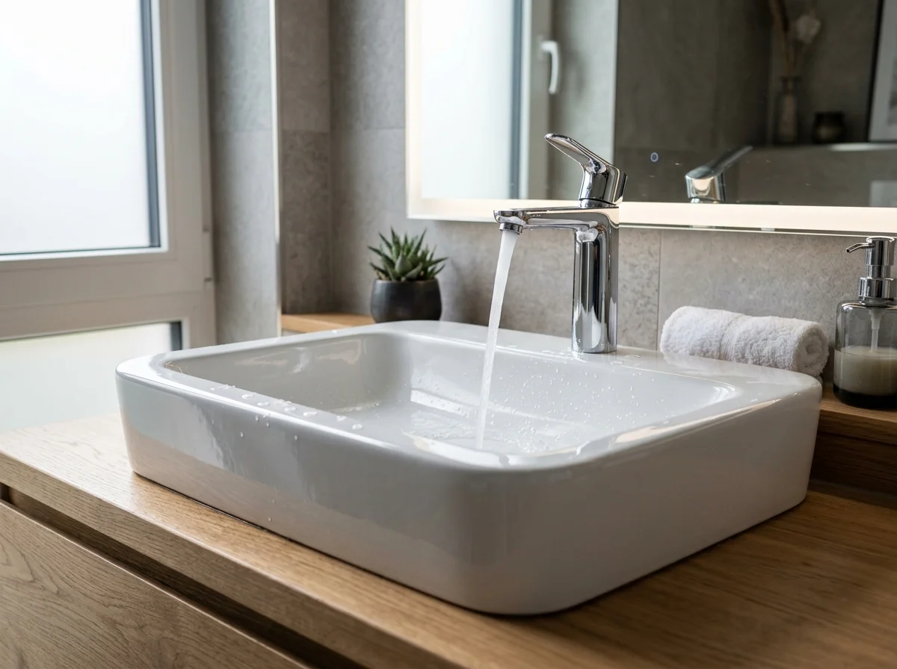
Instalación profesional de lavamanos de sobreponer, muebles de baño y conexiones de desagüe sin fugas.
Solicitar servicio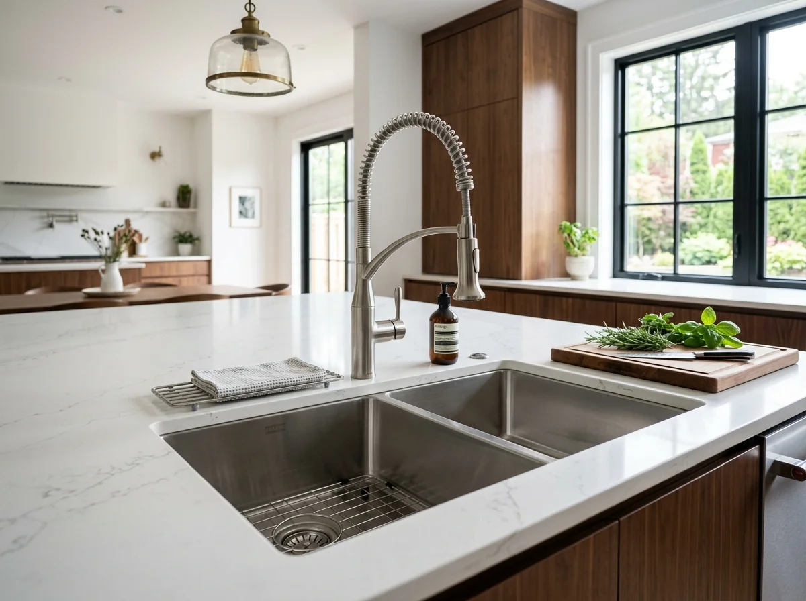
Instalación de lavaplatos, pocetas de acero inoxidable y conexión hidráulica completa con sifón estanco.
Solicitar servicio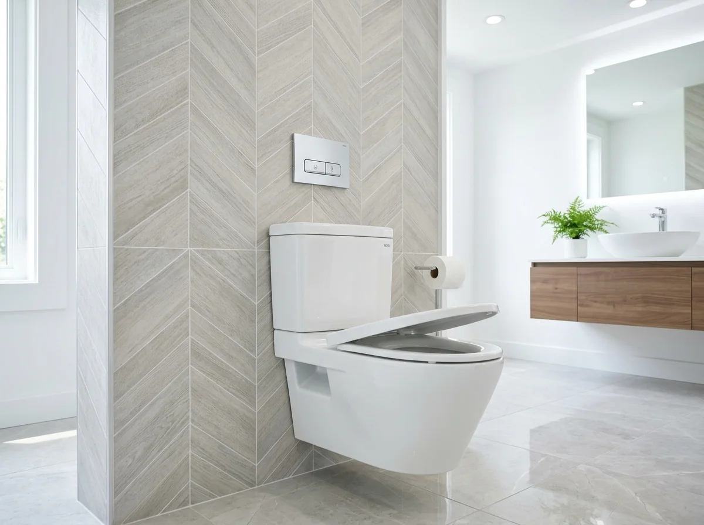
Instalación profesional y nivelación de sanitarios convencionales y ecológicos con cambio de bridas y sellos.
Solicitar servicio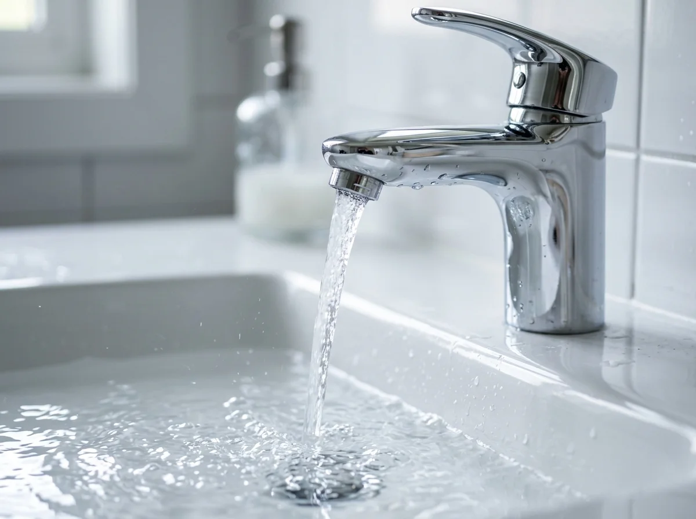
Instalación y cambio de grifería monocontrol, llaves ahorradoras, mezcladores y regaderas de baño.
Solicitar servicio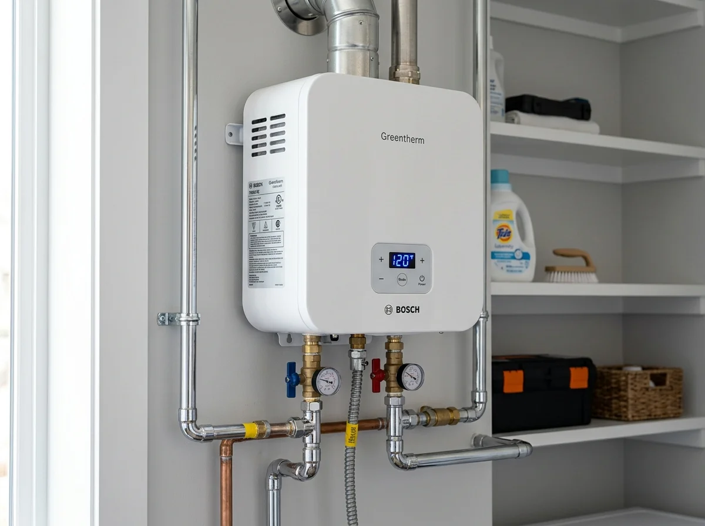
Revisión, calibración y mantenimiento técnico de calentadores de agua a gas y eléctricos de paso.
Solicitar servicio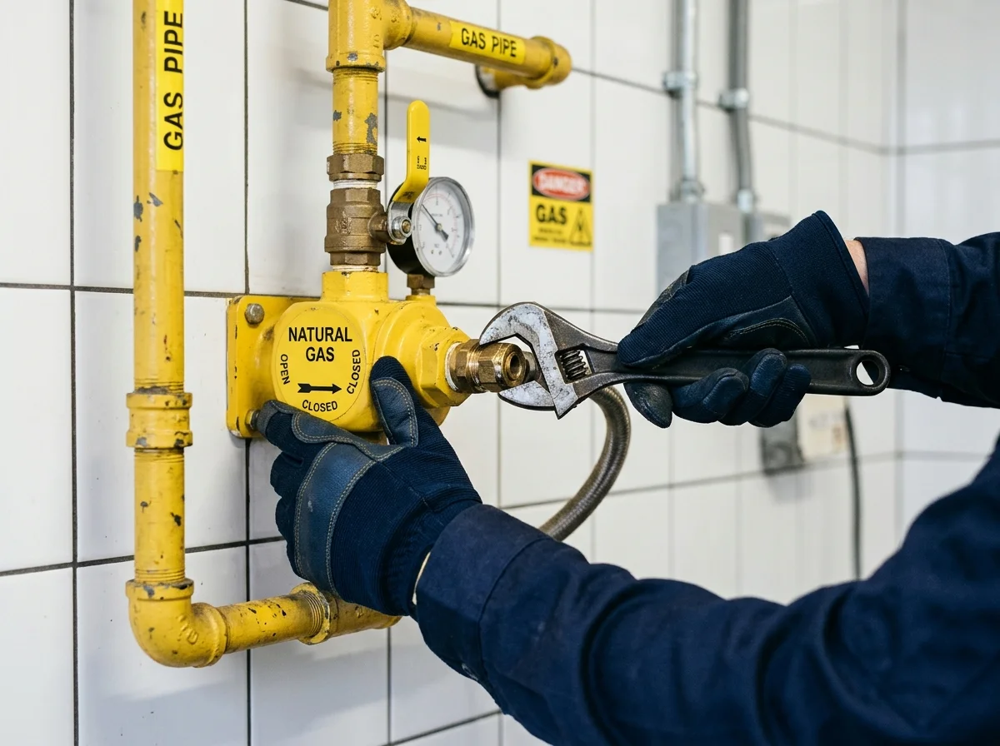
Detección y reparación técnica de fugas en redes internas de gas natural y propano con total seguridad.
Solicitar servicio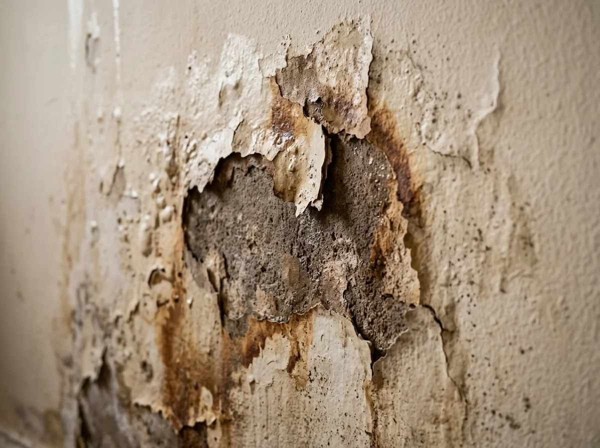
Solucionamos humedades y filtraciones en paredes, techos y losas erradicando el problema desde su origen.
Solicitar servicioEstamos disponibles las 24 horas del día para ayudarte de inmediato.
Un proceso simple, directo y sin complicaciones para darte tranquilidad.
Llámanos o escríbenos por WhatsApp describiendo tu necesidad o emergencia.
Coordinamos la visita de inmediato o a la hora que más te convenga.
Realizamos el trabajo con herramientas de vanguardia y sin daños innecesarios.
Entregamos tu instalación o reparación probada y con total respaldo.
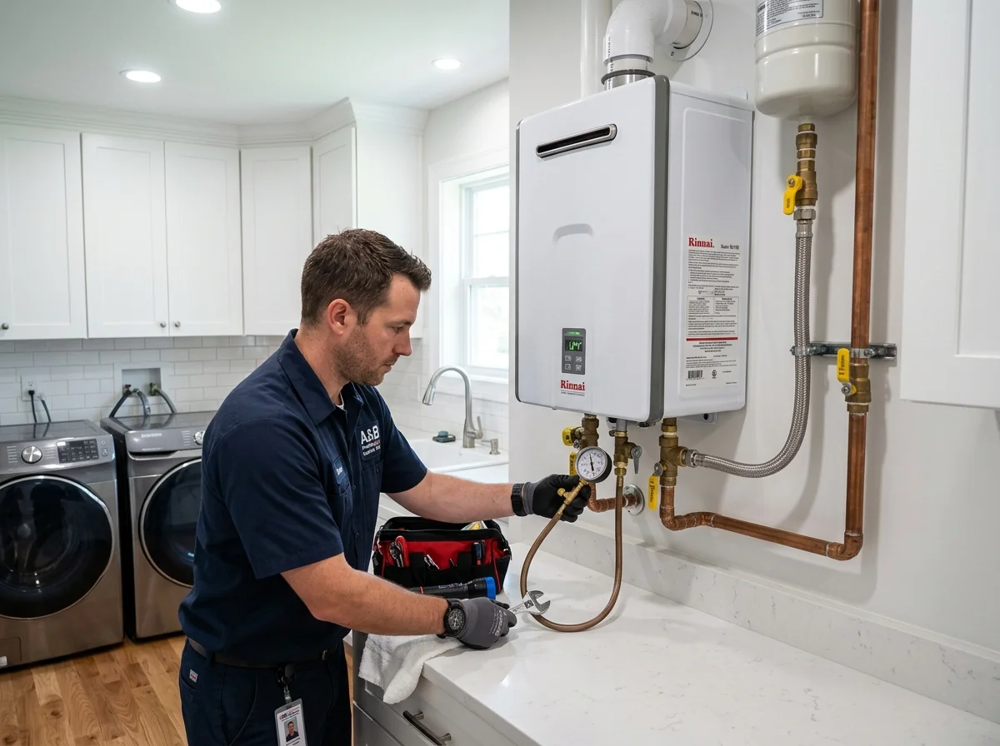
Calentadores GasCientos de hogares y empresas confían día a día en nuestros servicios.
"Llegaron súper rápido en la noche de un domingo. Encontraron la fuga exacta con el geófono y la repararon sin romper todas las baldosas. Excelente servicio."
"Muy puntuales y profesionales. Me instalaron lavaplatos y lavamanos en mi remodelación y todo quedó perfecto, sin filtraciones y muy pulcro."
"Me solucionaron un problema de humedad que llevaba meses sin que nadie diera con el chiste. Honestos, limpios y a un precio muy justo."
En Plomeros Medellín 24 somos un equipo élite de técnicos plomeros certificados especializados en resolver emergencias residenciales, comerciales e industriales en todo el Valle de Aburrá.
Brindamos atención prioritaria con geófono digital, destapamiento de cañerías sin romper muros, reparación de fugas de agua y gas, calentadores de paso y redes hidráulicas completas. Cada uno de nuestros trabajos incluye garantía por escrito, repuestos de primera calidad y tarifas 100% transparentes sin cobros sorpresa.
Desplazamiento inmediato las 24 horas a los principales municipios y comunas de Medellín:
Guías sencillas, recomendaciones preventivas y métodos efectivos creados por expertos en Medellín.
Conoce las 7 señales de alerta más comunes y la prueba del medidor de agua que puedes hacer tú mismo sin romper pisos.
Conoce los costos promedio de visitas diagnósticas, destapes, mantenimiento de calentadores e instalaciones en el Valle de Aburrá.
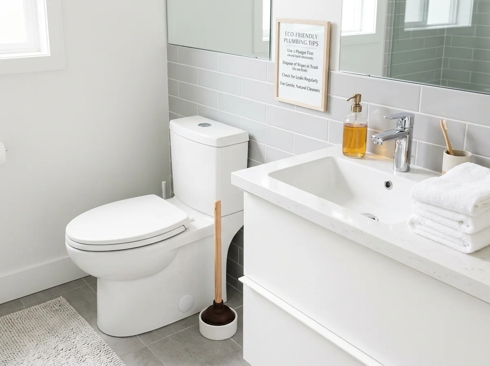
Destapes4 técnicas domésticas seguras para destapar inodoros o sifones y en qué momento es indispensable el uso de sonda eléctrica.
Aprende a reconocer fallas en la válvula, presión irregular de gas o agua tibia antes de que el equipo sufra un daño mayor.
Respuestas claras y directas a las inquietudes más frecuentes de nuestros clientes.
La visita diagnóstica tiene un costo accesible que se descuenta completamente del valor total del trabajo al autorizar la reparación o instalación. Siempre te entregamos un presupuesto claro antes de iniciar cualquier labor.
¡Sí! Nuestro equipo de guardia está disponible las 24 horas, los 7 días de la semana (incluyendo domingos y festivos) en Medellín, Envigado, Itagüí, Sabaneta, Bello y municipios cercanos.
Absolutamente. Todos nuestros servicios técnicos de destape, geófono, reparación de fugas, calentadores e instalaciones hidráulicas cuentan con garantía de satisfacción y respaldo directo.
Sí, contamos con geófonos digitales de escucha acústica y cámaras termográficas que permiten identificar el punto exacto de la rotura bajo piso o baldosas, evitando roturas destructivas e innecesarias.